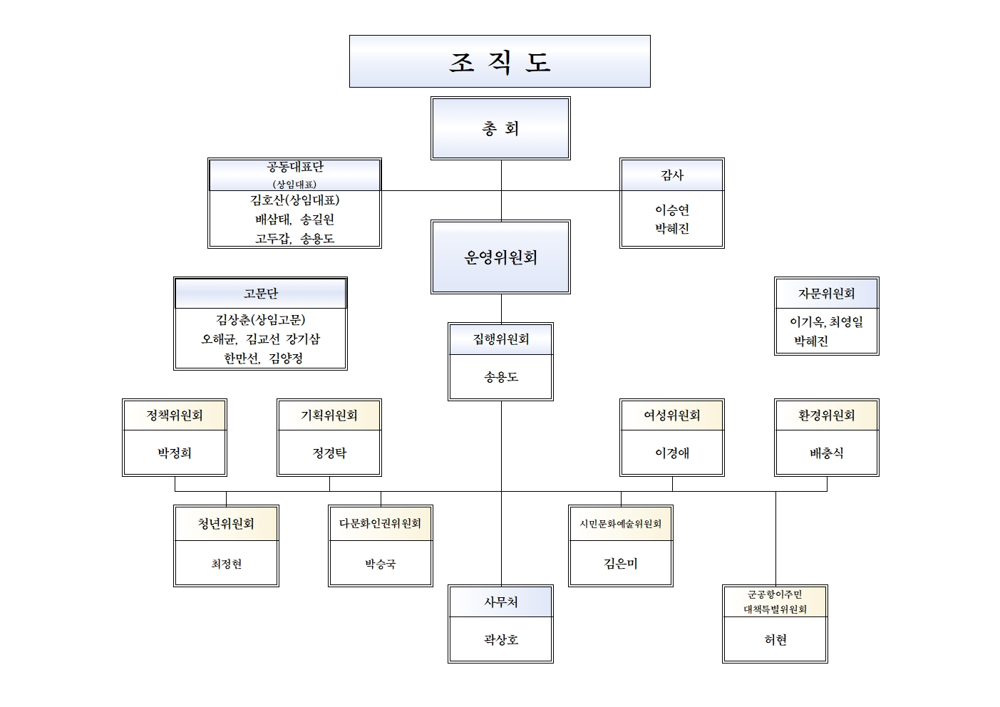

무안의 주권을 바로 세우는 무안 자치주권 시민연대
시민이 주인되는 무안군, 자치와 주권을 바로 세우는 대표 시민참여 플랫폼입니다.
시민 여러분, 안녕하십니까!
무안 자치주권 시민연대 공식 홈페이지 방문을 진심으로 환영합니다.
우리가 살아가는 무안군은 아름다운 갯벌과 풍요로운 농토, 그리고 성실한 군민들이 함께 터전을 일구어 온 자치 공동체입니다. 하지만 급변하는 지역 환경과 행정의 독주 속에 무안군민의 목소리가 소외되거나 주요 현안에서 주권이 외면당하는 일들이 거듭되어 왔습니다.
‘무안 자치주권 시민연대’는 풀뿌리 민주주의의 가치를 지키고, 지역 행정 및 정책에 군민이 직접 참여하여 당당한 주인으로서의 권리를 행사할 수 있도록 뜻을 모은 시민단체 연합체입니다.
“정의로운 지역사회, 당당한 무안군민, 권한을 가진 주민자치를 위해 언제나 시민 여러분 곁에서 함께 행동하겠습니다.”
누구나 쉽게 무안의 현안을 알고, 자유롭게 의견을 나누며, 더 나은 변화를 위해 행동할 수 있는 ‘온라인 시민광장’을 지향합니다. 군민 여러분의 뜨거운 관심과 적극적인 참여를 부탁드립니다.
설립 취지 & 발기 선언문
[발기 선언문] 무안의 내일, 시민의 손으로 바로 세운다!
우리는 오늘, 무안의 참된 자치와 군민의 주권을 바로 세우기 위해 '무안 자치주권 시민연대'의 발족을 장엄하게 선언한다.
1. 무안군 행정은 군민 위에 군림하는 것이 아니라 군민을 봉사하고 섬겨야 함을 확언한다.
2. 밀실 행정과 독단적 지역 개발을 거부하며, 군민의 알 권리와 정보 공개를 철저히 요구한다.
3. 생태계 환경 보전과 농업인의 삶의 질 향상을 위해 무안 시민사회 전체가 강력히 연대한다.
4. 주민자치회의 자율성을 침해하는 제도를 개선하고 군민 주권 시대를 직접 열어간다.
활동 강령
시민 중심 자치
모든 활동의 중심에 무안군민을 두고 주민참여예산 및 주민자치권 확대를 추진합니다.
투명성과 검증
지방정부의 정책 실행 과정을 철저히 감시하고 예산의 낭비를 방지합니다.
연대와 상생
환경, 농업, 교육, 복지 등 다양한 분야의 시민사회단체와 동등하게 연대합니다.
비영리·독립성
정치적 중립과 재정적 독립성을 유지하며 순수한 시민의 힘으로 운영합니다.
조직 및 운영위원회
무안 자치주권 시민연대는 의결기구인 '운영위원회'와 집행기구인 '사무국' 및 각 분과위원회로 구성되어 있습니다.

찾아오는 길
전라남도 무안군 무안읍 무안로 (시민연대 사무실)
카카오맵/네이버 지도 검색: "무안 자치주권 시민연대"
주소: 전라남도 무안군 무안읍 성남리 123-4 2층
전화: 061-450-0000 | 팩스: 061-450-0001
이메일: muan_civic@naver.com
대중교통: 무안공공버스터미널 하차 후 도보 5분 거리